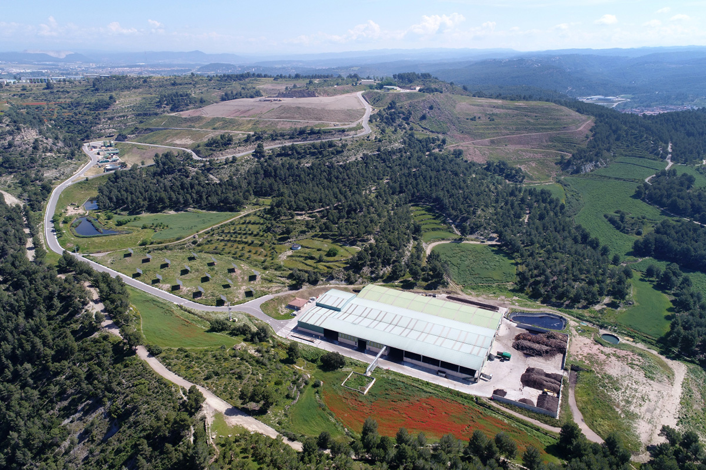
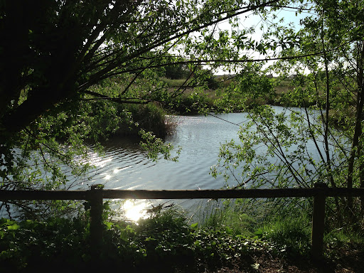

Galeria d’imatges



Gestió sostenible dels residus municipals
El Parc Ambiental de Bufalvent és propietat del Consorci del Bages i gestiona els residus municipals de la comarca i del Moianès. Aquí es tracta i selecciona el màxim de residus possibles, tot respectant el medi ambient.
A més de la gestió de residus, el parc promou l’educació ambiental mitjançant visites guiades i programes educatius per a escolars i ciutadans.

